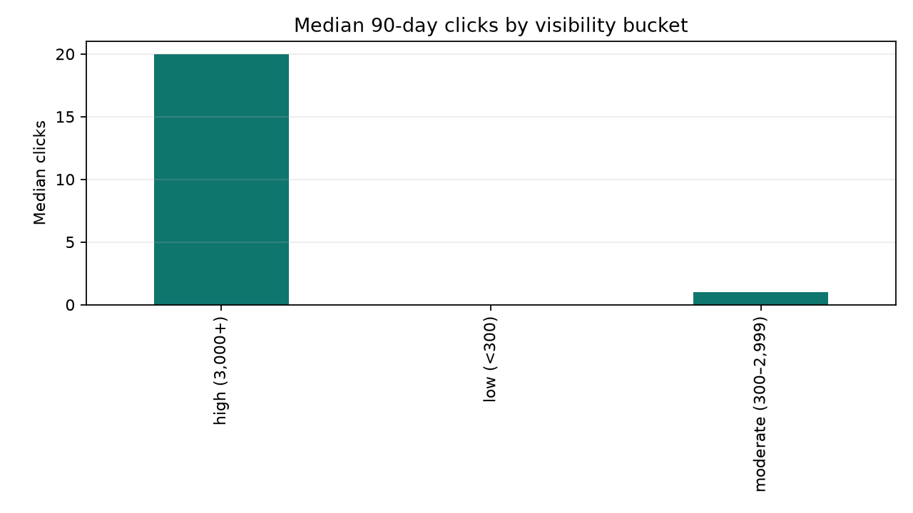
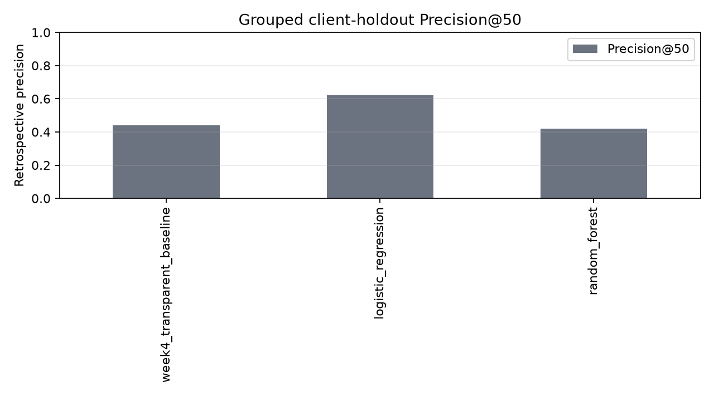
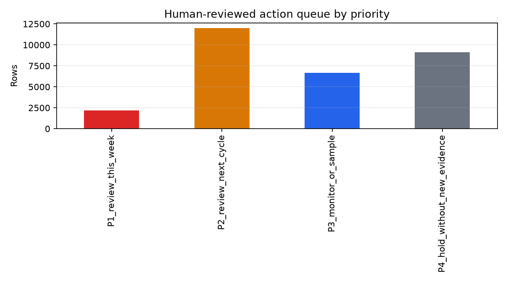

Refresh / Content Opportunity Scoring
A transparent, human-reviewed action engine for deciding what content to inspect first — with grouped validation, leakage checks, and explicit limits.
Abstract
This capstone asks which observable content signals can support a transparent, human-reviewed queue for content refresh decisions without using retrospective outcomes as production features. It uses FlyRank's anonymized 30,000-row starter release, where each row represents a pseudonymized content item with trailing-90-day measures and static metadata. I compare a transparent visibility/position/CTR/freshness baseline with logistic regression and random forest models using nine prior-window or static fields, evaluating primarily with a 75/25 client-grouped holdout. On the grouped holdout, the selected logistic model reached Precision@50 of 0.62 versus 0.44 for the transparent baseline, with ROC-AUC 0.535; this is a ranking result in one snapshot, not causal evidence. The output is a 30,000-row action queue with reason codes, priority tiers, next steps, effort/value proxies, and human-review gates for editorial decision support.
1 · Introduction / problem statement
The supported decision is which anonymized content items an editor or SEO reviewer should inspect first and what kind of review should happen next. A wrong call can waste editorial time or cause an unnecessary content change, so the system favors transparent, reversible review rather than automatic action. ML helps compare observable signals consistently and make trade-offs inspectable; it does not replace editorial judgment.
2 · Data
Source and grain
The repository's anonymized starter release contains 30,000 rows and 44 columns, one row per pseudonymized content item. The measures are a snapshot with trailing-90-day search and engagement fields plus static metadata. This is a learning slice, not a complete production warehouse.
Safety choices
No client names, domains, URLs, private queries, credentials, or raw exports are published. client_id is used only for the grouped split, never as a feature.
Excluded from features
trend_direction, trend_pct, observed_decline_outcome, and is_declining_label are retrospective or label-derived fields. The decline indicator is used only as an audit target for evaluation; it is never used to construct the model or action queue.

3 · Methodology
The transparent baseline adds points for visibility, position 1–20 with low CTR, and stale update age. The model uses nine prior-window or static fields: impressions, clicks, sessions, content age, update age, search volume, competition, word count, and character count.
The primary validation is a 75/25 GroupShuffleSplit by client_id, with 24 train clients, 8 test clients, and zero overlap. Precision@50 is the operational ranking metric; ROC-AUC is included as a broader discrimination measure. A random split is shown only as a comparison because repeated-client patterns can be optimistic.
4 · Results
| Method | Precision@10 | Precision@50 | Precision@100 | ROC-AUC |
|---|---|---|---|---|
| Transparent baseline | 0.60 | 0.44 | 0.43 | 0.500 |
| Logistic regression | 0.40 | 0.62 | 0.61 | 0.535 |
| Random forest | 0.60 | 0.42 | 0.49 | 0.652 |

The selected model's grouped ROC-AUC is modest. The honest conclusion is that it can support cautious review prioritization in this slice; it does not prove that the model generalizes to every account or that a content change will produce an outcome.
5 · Limitations & honest framing
- This is a 30,000-row anonymized snapshot with a retrospective label, not an intervention study.
- The grouped split tests portability across pseudonymous clients in this slice, not future performance across all accounts.
- A model score does not establish page quality, intent fit, or a causal refresh opportunity.
clicks × CPCis a captured click-equivalent value proxy, not revenue.- Editorial, legal, accessibility, brand, technical, or client constraints can override any recommendation.
6 · Ranked recommendations
The queue is built from the transparent Week-4 score and uses ML-08/ML-09 results as guardrails. It ranks review work into four tiers:

Review checklist
Before any edit, confirm the page is live and owned; check search intent, competition, seasonality, sitewide context, facts, citations, brand and legal constraints, cannibalization, technical blockers, a success metric, and a follow-up window.
No-go cases
Do not autonomously publish or rewrite; delete, redirect, or change indexing; use a label or future window as an input; claim causality from retrospective association; override editorial/legal/accessibility constraints; or treat the score as a content-quality verdict.
7 · Reproducibility
The executed notebook and committed receipts are in the public repository. The capstone notebook writes work/outputs/ml_capstone_metrics.json and the reusable figures under work/figures/. The ML-10 notebook regenerates the large action queue CSV, which is intentionally ignored by git.
pip install -r requirements.txt jupyter nbconvert --to notebook --execute work/notebooks/capstone.ipynb --output work/notebooks/capstone.ipynb --ExecutePreprocessor.timeout=600
View the repository · View the executed capstone notebook · View the report
8 · Acknowledgments & data credit
Built on the FlyRank ML Internship dataset. Public outputs use aggregate findings and decision-support language only; no private client identifiers, domains, URLs, queries, credentials, or raw exports are exposed.